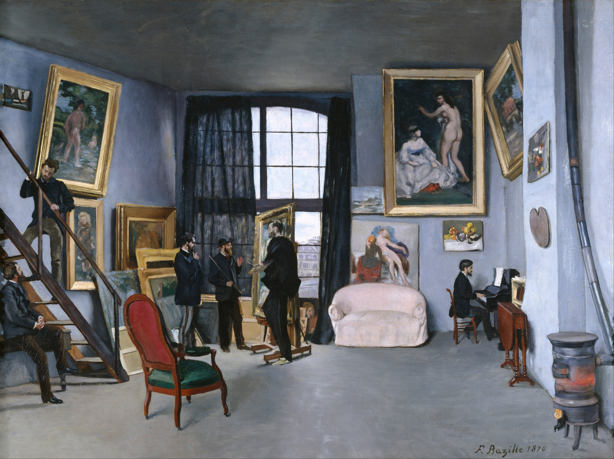

Λογάριθμοι και Geogebra#

Ο πίνακας Στούντιο στην οδό Condamine του Frédéric Bazille.#
Στο παρελθόν έχουμε δει στο aftermaths ένα φύλλο εργασίας σε σχέση με τους λογαρίθμους - πάνε σχεδόν δύο χρόνια από τότε. Η αλήθεια είναι ότι τα φύλλα εργασίας, αν και συνήθως απαιτούν αρκετό χρόνο μέσα στην τάξη που, δυστυχώς, δεν είναι πάντα διαθέσιμος, είναι ένα εξαιρετικό εργαλείο το οποίο μπορεί να κινητοποιήσει την φαντασία των μαθητών καθώς και να οδηγήσει σε ενδιαφέρουσες ατραπούς το μάθημα. Παρακάτω θα ξεκοκκαλίσουμε το εν λόγω φύλλο εργασίας με στόχο δύο πράγματα:
να παρουσιάσουμε αναλυτικά τη φιλοσοφία του και,
να δούμε πολλά και ενδιαφέροντα χαρακτηριστικά του geogebra.
Ολόκληρο το φύλλο εργασίας μπορείτε να το βρείτε εδώ - για μία εισαγωγή στους λογαρίθμους μέσω εμβαδών, δείτε εδώ.
Η βασική πλοκή του φύλλου εργασίας#
Κεντρικό ρόλο στο εν λόγω φύλλο εργασίας παίζει ένα πολύ γνωστό βακτήριο, η Escherichia Coli - E. Coli, για τους φίλους. Το παραπάνω βακτήριο, όπως και τα περισσότερα, δηλαδή, ακολουθεί ένα εκθετικό μοντέλο πολλαπλασιασμού. Για την ακρίβεια, κάθε βακτήριο διχοτομείται κάθε περίπου είκοσι (20) λεπτά, συνεπώς κάθε περίπου ένα εικοσάλεπτο ο πληθυσμός μίας αποικίας από E. Coli διπλασιάζεται.
Αυτήν ακριβώς την ιδιότητα μπορούμε να εκμεταλλευτούμε για να εισάγουμε την έννοια του λογαρίθμου. Για την ακρίβεια, η κεντρική ερώτηση η οποία θα μας «αποκαλύψει» τον λογάριθμο θα είναι το πώς, ξέροντας τον αρχικό πληθυσμό μίας αποικίας από E. Coli, μπορούμε να ανακαλύψουμε μετά από πόση ώρα θα έχουμε έναν επιθυμητό αριθμό από βακτήρια στην αποικία μας. Επί της ουσίας, σε αυτό το φύλλο εργασίας και με αυτό το θέμα, οι λογάριθμοι εισάγονται ως αντίστροφες συναρτήσεις των αντίστοιχων εκθετικών συναρτήσεων - μπορούμε, βέβαια, να «ανακαλύψουμε» με ισχυρότερα εργαλεία τους λογαρίθμους μέσα από υπερβολικά εμβαδά.
Αυτό που εμφανίζεται σε αυτό το σημείο ως ενδιάμεσο ερώτημα είναι το εξής - ουσιώδες σε ό,τι έχει να κάνει με τις εφαρμογές των μαθηματικών: και πού ξέρουμε ότι μία εκθετική συνάρτηση περιγράφει καλά τον πληθυσμό μίας αποικίας E. Coli συναρτήσει του χρόνου; Για την ακρίβεια, εντάξει, κάθε 20 λεπτά ο πληθυσμός διπλασιάζεται, αλλά γιατί επιλέγουμε να «ενώσουμε» τις κουκκίδες και να δούμε αυτή τη μεταβολή σαν συνάρτηση του χρόνου ορισμένη σε όλους τους θετικούς αριθμούς; Γιατί, για παράδειγμα, δεν την αντιμετωπίζουμε σαν μία (διακριτή) γεωμετρική πρόοδο;
Η αλήθεια είναι ότι η επιλογή του μαθηματικού μοντέλου ενός φαινομένου - όπως, εν προκειμένω, της μεταβολής του πληθυσμού μίας αποικίας βακτηρίων - δεν είναι μία εύκολη υπόθεση. Αντιθέτως, στις περισσότερες περιπτώσεις είναι η ουσία του προβλήματος να καταφέρουμε να μοντελοποιήσουμε σωστά το πρόβλημά μας, έτσι ώστε το μοντέλο που θα κατασκευάσουμε να μην είναι μακριά από την πραγματική κατάσταση - είτε αγνοώντας δεδομένα είτε προσθέτοντας πληροφορίες που ενδεχομένως να μην ισχύουν.
Επομένως, στον δρόμο μας για τους λογαρίθμους, μέσα από το παραπάνω φύλλο εργασίας εξετάζουμε και το ζήτημα της μαθηματικής μοντελοποίησης αλλά και της διαδικασίας επιλογής του κατάλληλου μοντέλου για το πρόβλημά μας.
Καλό είναι να έχετε ανοικτό σε μία άλλη καρτέλα και το αντίστοιχο αρχείο του φύλλου εργασίας - μπορείτε να το βρείτεεδώ- για να είναι πιο άνετη η παρακολούθηση όσων θα συζητάμε.
Ζητούμενο #1#
Στο πρώτο ζητούμενο τα πράγματα είναι σχετικά απλά. Ξεκινώντας από ένα τρυβλίο Petri με μία E. Coli υπολογίζουμε τον πληθυσμό που θα έχουμε σε διάφορες χρονικές στιγμές στο μέλλον. Το εν λόγω ζητούμενο είναι σαφώς εισαγωγικό στο σενάριό μας και αποσκοπεί κυρίως στο να εξοικειωθούν τα παιδιά με το φαινόμενο με το οποίο θα ασχοληθούμε. Στην προκειμένη αυτό δεν παρουσιάζει ιδιαίτερη δυσκολία δεδομένου ότι οι εκθετικές συναρτήσεις είναι αρκετά πρόσφατες και οι πράξεις είναι σχετικά απλές. Μία αναμενόμενη δυσκολία είναι η μετατροπή μονάδων - από ημέρες και ώρες σε λεπτά - η οποία όμως δεν είναι δύσκολο να ξεπεραστεί.
Επόμενο ζητούμενο είναι να αναδειχθεί η γεωμετρική φύση της αύξησης του πληθυσμού στο τρυβλίο. Αυτό είναι σχετικά εύκολο να το δει κανείς - και έτσι φάνηκε και κατά τη διάρκεια του μαθήματος. Αυτό που λίγο φάνηκε να προβληματίζει τα περισσότερα παιδιά είναι οι μονάδες μέτρησης του χρόνου που είναι ώρες - ενώ ο διπλασιασμός του πληθυσμού γίνεται σε 20λεπτα. Για την επίλυση αυτού του μικρού ζητήματος προτάθηκαν, έπειτα από συζήτηση, δύο τρόποι - που οδηγούν στο ίδιο αποτέλεσμα:
Εντός μίας ώρας πραγματοποιούνται τρεις (3) διπλασιασμοί, συνεπώς μέσα σε μία ώρα ο πληθυσμός στο τρυβλίο έχει οκταπλασιαστεί - \(2^3=8\) . Αυτό σημαίνει ότι ο πληθυσμός μέσα στο τρυβλίο συναρτήσει του χρόνου μετρημένου σε ώρες δίνεται από τη συνάρτηση \(\pi(t)=8^t\) .
Εντός μίας ώρας έχουμε τρία εικοσάλεπτα, επομένως, αν \(t\) είναι ο χρόνος μετρημένος σε ώρες, τότε ο χρόνος μετρημένος σε εικοσάλεπτα θα είναι \(3t\) . Συνεπώς, ο πληθυσμός στο τρυβλίο θα δίνεται συναρτήσει του χρόνου από τη συνάρτηση \(\pi(t)=2^{3t}=(2^3)^t=8^t\) .
Τα παραπάνω παρουσιάζουν ενδιαφέρον καθώς ο δεύτερος τρόπος αντιμετώπισης αυτής της «ασυμφωνίας» μεταξύ μονάδων αντιμετωπίζεται με μία άμεση αλλαγή στη μονάδα μέτρησης από ώρες σε εικοσάλεπτα. Ο πρώτος τρόπος, από την άλλη, είναι μία κεκαλυμμένη αλλαγή στη μονάδα μέτρησης, υπό την έννοια ότι εδώ γίνεται αναγωγή στη μονάδα (ώρα αντί για 20λεπτο) χωρίς να γίνεται κάποια ρητή αναφορά από τα παιδιά στο ότι αυτό που κάνουν είναι, ουσιαστικά, μία αλλαγή στις μονάδες μέτρησης του χρόνου.
Όπως θα φαντάζεστε, το παραπάνω ζητούμενο δεν είναι προγραμματισμένο να αφιερωθεί πολύς χρόνος - το πολύ πέντε λεπτά, και πολλά λέμε, δηλαδή, αν τα παιδιά είναι «ζεστά» από τις εκθετικές συναρτήσεις.
Ζητούμενο #2#
Εδώ θίγεται ένα βασικό ζητούμενο του εν λόγω φύλλου εργασίας. Όπως έχουμε δει από το πρώτο ερώτημα, η αύξηση του πληθυσμού της E. Coli στο τρυβλίο εκθετικοφέρνει. Ωστόσο, με αυτό το ζητούμενο καλούμαστε να κάνουμε αυτή την αόριστη ιδέα περί εκθετικής συμπεριφοράς πιο συγκεκριμένη. Για την ακρίβεια, καλούμαστε να επιλέξουμε ανάμεσα στις εξής τρεις γραφικές παραστάσεις:

Οι τρεις επιλογές μας.#
Η αλήθεια είναι ότι όταν ετοίμαζα το φύλλο εργασίας δεν είχα προετοιμαστεί για το πόση κουβέντα μπορεί να σηκώσει το εν λόγω ερώτημα από τα παιδιά. Περίμενα ότι από την πλειονότητα το σχήμα (β”) θα απορριφθεί στην αρχή και ότι το ντέρμπυ θα παιζόταν μεταξύ της πρώτης και της τρίτης επιλογής. Ωστόσο, έπεσα έξω! Αυτό που απορρίφθηκε αμέσως από τα περισσότερα παιδιά ήταν το πρώτο σχήμα με αρκετά πειστικές εξηγήσεις, όπως:
«Μα, καλά, ανάμεσα στα 20 και τα 40 λεπτά πού πάει ο πληθυσμός;»
«Για δεν ενώσαμε τις κουκκίδες; Εξαφανίζεται ο πληθυσμός της αποικίας;»
Ανάμεσα στις δύο εναπομείνασες επιλογές μέσα στην τάξη έγινε ένας αρκετά ζωηρός διάλογος που κράτησε περίπου 5-10 λεπτά - ίσως και λίγο παραπάνω. Οι επιχειρηματολογίες των δύο ομάδων ήταν οι εξής - παρουσιάζονται σαν περίληψη του διαλόγου που έγινε στην τάξη:
Επιλογή (γ”): Δεδομένου ότι κάθε είκοσι λεπτά κάθε βακτήριο διπλασιάζεται, ο πληθυσμός θα περιγράφεται καλά από μία εκθετική συνάρτηση, όπως αυτή που φαίνεται στο σχήμα.
Επιλογή (β”): Δεδομένου ότι ξεκινήσαμε με ένα βακτήριο και αυτό διχοτομήθηκε, τα δύο βακτήρια θα διχοτομηθούν σε τέσσερα την ίδια στιγμή. Αναλόγως, αυτά τα τέσσερα θα διχοτομηθούν σε οκτώ την ίδια στιγμή και ούτω καθεξής. Έτσι, κάθε εικοσάλεπτο θα έχουμε μαζικές διχοτομήσεις όλων των βακτηρίων και μετά το τρυβλίο θα «ηρεμεί».
Επιλογή (γ”): Ναι, αλλά το ότι διπλασιάζονται κάθε είκοσι λεπτά δε σημαίνει «νταν» είκοσι λεπτά. Επομένως, μπορεί να αρχίσει να «απλώνει» σιγά σιγά η στιγμή του διπλασιασμού, οπότε το διπλανό σχήμα είναι καταλληλότερο.
Επιλογή (β”): Ακόμα και με αυτήν την υπόθεση, κάθε εικοσάλεπτο θα παρατηρούμε για κάποιο διάστημα έντονη αύξηση του πληθυσμού κι έπειτα χαλάρωση αυτής της αύξησης.
Επιλογή (γ”): Ναι, αλλά στο σχήμα (β”) αυτή η αύξηση φαίνεται πολύ ξαφνική και απότομη ενώ στο σχήμα (γ”) όλα είναι πιο ομαλά.
Επιλογή (β”): Ναι, αλλά από τα δύο σχήματα, το (β”) είναι πιο κοντά σε αυτό που συμβαίνει από το (γ”).
Αυτά, σαφώς, δεν ειπώθηκαν ακριβώς τόσο πολιτισμένα - ωστόσο οι έννοιες που αναφέρονται παραπάνω ήρθαν στη συζήτηση από τα παιδιά - και, τελικά, η τάξη συμφώνησε να κρατήσει το δεύτερο σχήμα ως την κατάλληλη επιλογή για το φαινόμενο.
Αναστοχαζόμενος την όλη συζήτηση, μπορώ να πω ότι πήγε καλύτερα από ότι περίμενα ως προς τη διακίνηση μαθηματικών ιδεών καθώς και ως προς το κομμάτι της μοντελοποίησης, μιας και δεν «παρασύρθηκαν» από την άστοχη πρώτη επιλογή. Σίγουρα, αν είχε γίνει καλύτερη προετοιμασία και στόχευση, θα μπορούσε με βάση το παραπάνω να χτιστεί μία καλύτερη συζήτηση - αφήστε ιδέες για νέα φύλλα εργασίας στα σχόλια!
Ζητούμενο #3#
Σε αυτό το ζητούμενο έχουμε μία ποιοτική διαφοροποίηση σε σχέση με το προηγούμενο. Αντί να ξεκινήσουμε από ένα βακτήριο και να το αφήσουμε να διπλασιαστεί, ξεκινάμε με ένα δισεκατομμύριο βακτήρια. Σαν να μην έφτανε αυτό, υποθέτουμε ότι αυτά τα βακτήρια βρίσκονται και σε διαφορετικές φάσεις. Για παράδειγμα, ένα βακτήριο μπορεί να έχει μόλις γεννηθεί από μία διχοτόμηση ενώ ένα άλλο να είναι σε φάση που έχει μπροστά του άλλα 7 λεπτά μέχρι την επόμενη διχοτόμηση.
Δεδομένης της προηγούμενης συζήτησης που είχε γίνει στην τάξη - βλ. παραπάνω - ήταν σχετικά εύκολο να φωτιστεί η διαφορά αυτής της περίπτωσης σε σχέση με την προηγούμενη. Ακριβώς επειδή εδώ είχαμε πάρα πολλά βακτήρια και όλα σε διαφορετικές καταστάσεις την ίδια στιγμή, το δεύτερο μοντέλο - εικόνα (β”) - είναι ανεπαρκές. Εδώ, πράγματι, οι διχοτομήσεις θα συμβαίνουν καθ” όλη τη διάρκεια της μελέτης μας, συνεπώς δεν έχει νόημα να βλέπουμε τον χρόνο «κβαντισμένο» σε εικοσάλεπτα. Έτσι, η καταλληλότερη επιλογή εδώ - και αυτή που επέλεξαν και τα παιδιά στην τάξη σχεδόν ομόφωνα - είναι η τρίτη, που ταιριάζει σε εκθετική συνάρτηση.
Σε αυτό το σημείο, αν υπάρχει χρόνος, είναι χρήσιμο να γίνει μία μικρή συζήτηση στην τάξη σε σχέση με την αξία της μοντελοποίησης και της επιλογής του πιο ταιριαστού μοντέλου σε κάθε πρόβλημα. Όπως φάνηκε από τις δύο παραπάνω περιπτώσεις, το ίδιο φαινόμενο - η διχοτόμηση μίας E. Coli - μπορεί, υπό διαφορετικές συνθήκες, αν αναπαρίσταται από διαφορετικά μαθηματικά αντικείμενα. Πράγματι, στην πρώτη περίπτωση που τα πράγματα ήταν πιο «τακτοποιημένα» χρειαστήκαμε ένα σχετικά απλό μοντέλο, ενώ στη δεύτερη περίπτωση επιλέξαμε κάτι δομικά πιο περίπλοκο.
Ένα άλλο κρίσιμο σημείο που μπορεί να φωτιστεί αν υπάρχει χρόνος είναι πως και τα δύο μαθηματικά μοντέλα που επιλέξαμε δεν περιγράφουν πλήρως και απόλυτα σωστά την κατάσταση στο τρυβλίο κάθε χρονική στιγμή. Όταν ρωτήθηκαν τα παιδιά στην τάξη περί αυτού συμφώνησαν ότι, πράγματι, ίσως είναι λίγο πιο «μπλεγμένη» η κατάσταση μέσα στο τρυβλίο. Ωστόσο, εύκολα αναδείχθηκε και το ότι δε θα είχε αξία να ασχοληθούμε με το τι ακριβώς συμβαίνει μέσα στο τρυβλίο, αφού τα βασικά χαρακτηριστικά που μας ενδιαφέρουν είναι εμφανή σε κάθε μοντέλο. Αυτό είναι ένα ιδιαίτερα σημαντικό βήμα στη μαθηματική μοντελοποίηση. Δε μας απασχολεί να κατασκευάσουμε πάντα ένα μοντέλο που να αποτυπώνει με αυστηρό τρόπο όλα τα στοιχεία του φαινομένου. Για την ακρίβεια, αυτό μπορεί πολλές φορές να είναι και αδύνατο. Αυτό όμως που μας απασχολεί είναι να ξεχωρίσουμε τα χαρακτηριστικά που μας ενδιαφέρουν και να σχεδιάσουμε ένα μαθηματικό μοντέλο το οποίο αυτά να τα εκφράζει καλά και με πειστικό τρόπο.
Ζητούμενο #4#
Από αυτό το ζητούμενο κι έπειτα κάνουν την εμφάνισή τους δειλά-δειλά οι λογάριθμοι. Ως τώρα, έχουμε κατασκευάσει ένα μοντέλο το οποίο μπορεί να περιγράψει αρκετά πειστικά τον πληθυσμό μίας αποικίας από E. Coli με αρχικό πληθυσμό ενός (1) δισεκατομμυρίου βακτηρίων. Θέτουμε, τώρα, στο μοντέλο μας, ένα φυσιολογικό, αν μη τι άλλο, ερώτημα: Μετά από πόση ώρα θα έχουμε στο δοχείο \(X\) δισεκατομμύρια βακτήρια;
Αρχικά το ερώτημα αυτό τίθεται για «βολικές» τιμές του \(X\) - ειδικότερα, για δυνάμεις του 2. Αυτό γίνεται έτσι ώστε να περάσουμε από το γνώριμο χωράφι των απλών εκθετικών εξισώσεων της μορφής \(a^x=a^r\) , οι οποίες λύνονται εύκολα - \(x=r\) . Σε αυτό το ζητούμενο. λοιπόν, δεν αναμένουμε κάποια ιδιαίτερη δυσκολία, παρά μόνο ίσως κάποια ζητήματα με τις μονάδες μέτρησης. Για την ακρίβεια, στην τάξη κάποια παιδιά χρησιμοποίησαν τη συνάρτηση \(8^t\) , με τον χρόνο μετρημένο σε ώρες, οπότε και υπήρξε μία μικρή ταλαιπωρία να λυθούν εξισώσεις όπως για παράδειγμα η \(8^t=16\) , καθώς:
Αντιθέτως, κάποια άλλα παιδιά χρησιμοποίησαν την \(2^t\) , μετρώντας τον χρόνο σε εικοσάλεπτα, πράγμα που έκανε τις εξισώσεις αρκετά πιο εύκολες να λυθούν.
Πέρα από τα παραπάνω μικρά και τεχνικά ζητήματα, το εν λόγω ζητούμενο δεν παρουσίασε κάποια ιδιαίτερη δυσκολία για τα παιδιά, ενώ ανέδειξε για μία ακόμη φορά τη σημασία που έχει η κατάλληλη επιλογή μοντέλου και μονάδων μέτρησης.
Ζητούμενο #5#
Εδώ πλέον αγγίζουμε την έννοια του λογαρίθμου. Ας υποθέσουμε κι εμείς για ευκολία ότι το μοντέλο μας περιγράφεται από τη συνάρτηση \(\pi(t)=2^t\) με τον χρόνο να μετριέται σε εικοσάλεπτα. Έτσι, αυτό που αναζητούμε αυτή τη στιγμή είναι η λύση της εξίσωσης:
Σαφώς, δεδομένου ότι το \(3\) δε γράφεται ως ρητή δύναμη του \(2\) - αυτό δε θίχτηκε ευθέως στην τάξη, αλλά σίγουρα θα είχε ενδιαφέρον να συζητηθεί - η δουλειά μας δεν είναι τόσο απλή όσο στο προηγούμενο ζητούμενο. Όπως αναμενόταν, αυτό το ερώτημα προκάλεσε έντονες συζητήσεις. Αρχικά, αγνοώντας την υπόδειξη - η οποία ίσως θα μπορούσε και να λείπει - η πρώτη σκέψη των παιδιών θύμιζε ένα επιχείρημα που είχαμε δει στην τάξη κατά τον ορισμό των εκθετικών συναρτήσεων. Για την ακρίβεια, ξεδιπλώθηκε πρώτα μία σκέψη από μία μαθήτρια που κινούνταν στην ακόλουθη βάση:
Δοκιμάζουμε για \(x\) το 1 και το 2 και παίρνουμε \(2^1<3<2^2\) . Επομένως, η λύση που ψάχνουμε είναι ανάμεσα στο 1 και το 2.
Δοκιμάζουμε το 1.5 οπότε παίρνουμε \(2^{1.5}=2^{3/2}=\sqrt{8}=2\sqrt{2}\approx2.8<3\) , άρα είμαστε πάνω από το 1.5 και κάτω από το 2.
Δοκιμάζουμε το 1.8 και συνεχίζουμε αναλόγως μέχρι να βρούμε μία καλή προσέγγιση του 3.
Η παραπάνω επαναληπτική διαδικασία θυμίζει έντονα τη μέθοδο της διχοτόμησης που χρησιμοποιείται συχνά στην αριθμητική ανάλυση για να επιλύσει διάφορες εξισώσεις αριθμητικά. Η ιδέα πίσω από την παραπάνω προσέγγιση, είναι ουσιαστικά να προσεγγίσουμε το 3 ως δύναμη του 2 κάνοντας επαναληπτικά όλο και ακριβέστερες εκτιμήσεις. Αν και αυτό δεν είναι μία γενική στρατηγική, η πληρότητα των πραγματικών αριθμών και η συνέχεια και η μονοτονία της \(2^t\) επιτρέπουν πράγματι μία τέτοια προσέγγιση.
Έπειτα από λίγη συζήτηση σε σχέση με τα παραπάνω, τέθηκε στο τραπέζι και η πρόταση που γίνεται στην υπόδειξη. Ειδικότερα, μία μαθήτρια επισήμανε ότι μπορούμε, χρησιμοποιώντας τη γραφική παράσταση της \(2^t,\) να πάρουμε μία προσεγγιστική τιμή του \(x\) για το οποίο ισχύει ότι \(2^x=3\) όπως στο παρακάτω σχήμα:

Περίπου 30 λεπτά, not bad…#
Επί της ουσίας, σχεδιάζουμε την \(y=3\) και μουτζουρώνουμε το σημείο τομής της με την \(y=2^t\) . Έπειτα, φέρουμε κάθετη από το \(A\) στον άξονα του χρόνου και το σημείο τομής της καθέτου που σχεδιάσαμε με τον άξονα - το \(B\) του σχήματος - είναι ο ζητούμενος χρόνος.
Όπως φαντάζεστε, με δύο μεθόδους επί τάπητος, ήταν ευκαιρία για μία συζήτηση σχετικά με το τι μπορούσε να μας δώσει η μία μέθοδος σε σχέση με την άλλη. Η αλήθεια είναι ότι αμφότερες επιτελούν τον σκοπό τους, ωστόσο η δεύτερη τελικά ήταν αυτή που προτιμήθηκε, κυρίως γιατί ήταν πιο σύντομη.
Ζητούμενα #6 και #7#
Εδώ τα πράγματα ήταν σχετικά απλά - θα μπορούσαν αυτά τα ζητούμενα να είχαν συγχωνευθεί με το προηγούμενο, κατ’αναλογία με τη δομή του πρώτου ζητουμένου. Έχοντας βρει τη μέθοδο από το προηγούμενο ζητούμενο, τα παιδιά δεν είχαν καμία δυσκολία να γενικεύσουν κι εδώ την ίδια μέθοδο και να υπολογίσουν για διάφορες τιμές του πληθυσμού τη χρονική στιγμή που αυτός θα εμφανιζόταν κατά προσέγγιση, χρησιμοποιώντας τη γραφική παράσταση της \(2^t\) . Με αυτά τα δύο ζητούμενα φάνηκε ένα ακόμα πλεονέκτημα της γραφικής μεθόδου έναντι της προσέγγισης μέσα από ρητούς εκθέτες. Σε αντίθεση με την προσέγγιση μέσω ρητών εκθετών, η γραφική προσέγγιση γενικεύεται εύκολα και άμεσα, επιτρέποντας έτσι να δούμε πιο εύκολα τη γενικότητα του προβλήματος της εύρεσης του χρόνου όπου στο τρυβλίο έχουμε έναν δεδομένο πληθυσμό \(p\) .
Ζητούμενο #8#
Εδώ κάνουν ουσιαστικά την εμφάνισή τους οι λογάριθμοι. Αφού πρώτα συζητήθηκε λίγο το πώς για κάθε τιμή του πληθυσμού μπορούμε να βρούμε ακριβώς μία χρονική στιγμή στην οποία να έχουμε αυτόν τον πληθυσμό στο δοχείο, έχοντας κατά νου ότι οι εκθετικές συναρτήσεις είναι γνησίως μονότονες - και άρα και «1-1». Για να το επιτύχουμε αυτό, μπορούμε να χρησιμοποιήσουμε θαυμάσια το geogebra. Αρχικά, ακόμα και με ένα απλό σχήμα στο geogebra, όπως αυτό που μπορείτε να βρείτε εδώ, μπορούμε να παίξουμε μετακινώντας πάνω-κάτω την οριζόντια ευθεία και να πάρουμε μία ιδέα. Ωστόσο εμείς θα φτιάξουμε κάτι πιο διαδραστικό. Για την ακρίβεια, θα προσπαθήσουμε να σχεδιάσουμε τη γραφική παράσταση της συνάρτησης που μας δίνει τη χρονική στιγμή που εμφανίζεται ένας δεδομένος πληθυσμός στο τρυβλίο - συναρτήσει του πληθυσμού.
Για να πετύχουμε το παραπάνω ακολουθούμε τα εξής βήματα:
Αρχικά, σχεδιάζουμε τη γραφική παράσταση της συνάρτησης \(f(x)=2^x\) στο Geogebra.
Έπειτα ορίζουμε έναν μετρητή \(a\) που να παίρνει τιμές από το 0 εώς το 10 - ή όσο θέλουμε.
Στη συνέχεια σχεδιάζουμε την ευθεία \(y=a\) . Έτσι, καθώς θα αλλάζει τιμές ο μετρητής, η ευθεία μας θα κινείται «πάνω-κάτω».
Χρησιμοποιώντας το εργαλείο Intersections του Geogebra σχεδιάζουμε το σημείο τομής \(A\) της γραφικής παράστασης της \(f\) με την ευθεία \(y=a\) .
Χρησιμοποιώντας τις εντολές \(x(A)\) και \(y(A)\) σχεδιάζουμε το σημείο \(B(y(A),x(A))\) το οποίο περιγράφει ακριβώς αυτό που θέλουμε - τον χρόνο συναρτήσει του επιθυμητού πληθυσμού.
Ενεργοποιούμε το ίχνος για το σημείο \(B\) και του δίνουμε κι ένα χρώμα.
Θέτουμε σε κίνηση τον μετρητή.
Μετά από λίγη ώρα, θα έχουμε μία εικόνα σαν και αυτή:

Η «αποκάλυψη» του λογαρίθμου.#
Ζητούμενο #9#
Το τελευταίο αυτό ζητούμενο είναι στην ουσία μία μικρή εισαγωγή - ένα trailer - των όσων θα δούμε στην ενότητα των λογαρίθμων. Δεδομένου του σχήματος, ήταν εύκολο για τα παιδιά να εντοπίσουν διάφορες χαρακτηριστικές ιδιότητες της γραφική παράστασης της λογαριθμικής συνάρτησης όπως η μονοτονία της, τη σχέση συμμετρίας που έχει με την εκθετική συνάρτηση και άλλα πολλά ενδιαφέροντα.
Το σχετικό αρχείο Geogebra μπορείτε να το βρείτε εδώ.
Απολογισμός#
Το παραπάνω φύλλο εργασίας ήταν, σε γενικές γραμμές αποδοτικό ως προς τους στόχους του, που ήταν κυρίως να εισαχθεί η έννοια του λογαρίθμου και, παραπλεύρως, να γίνει μία συζήτηση για τη σημασία που έχει η σωστή και έξυπνη κάθε φορά επιλογή του μαθηματικού μοντέλου ενός φαινομένου. Κάποια πράγματα θα μπορούσαν να είχαν πάει καλύτερα σε ό,τι αφορά κυρίως τον χρονοπρογραμματισμό, καθώς χρειάστηκε λίγο παραπάνω από μία διδακτική ώρα - για την ακρίβεια, χρειάστηκε και όλο το διάλειμμα - και κάποια ζητούμενα τα οποία θα μπορούσαν να έχουν συμπτυχθεί έτσι ώστε να δοθεί περισσότερος χρόνος στα υπόλοιπα ή ενδεχομένως άλλα.
Ενδεικτικά, μία αλλαγή που ίσως να ήταν αρκετά χρήσιμη να ήταν η διάσπαση του παραπάνω σε δύο μέρη: ένα που να αφορά τις εκθετικές συναρτήσεις και τη μοντελοποίηση και ένα δεύτερο που να αφορά το αντίστροφο πρόβλημα που εξετάσαμε παραπάνω και μία πιο ενδελεχή γραφική μελέτη των ιδιοτήτων των λογαριθμικών συναρτήσεων. Προτάσεις και ό,τι άλλο θέλετε ευπρόσδεκτα στα σχόλια!
Μέχρι την επόμενη εβδομάδα, καλή συνέχεια!